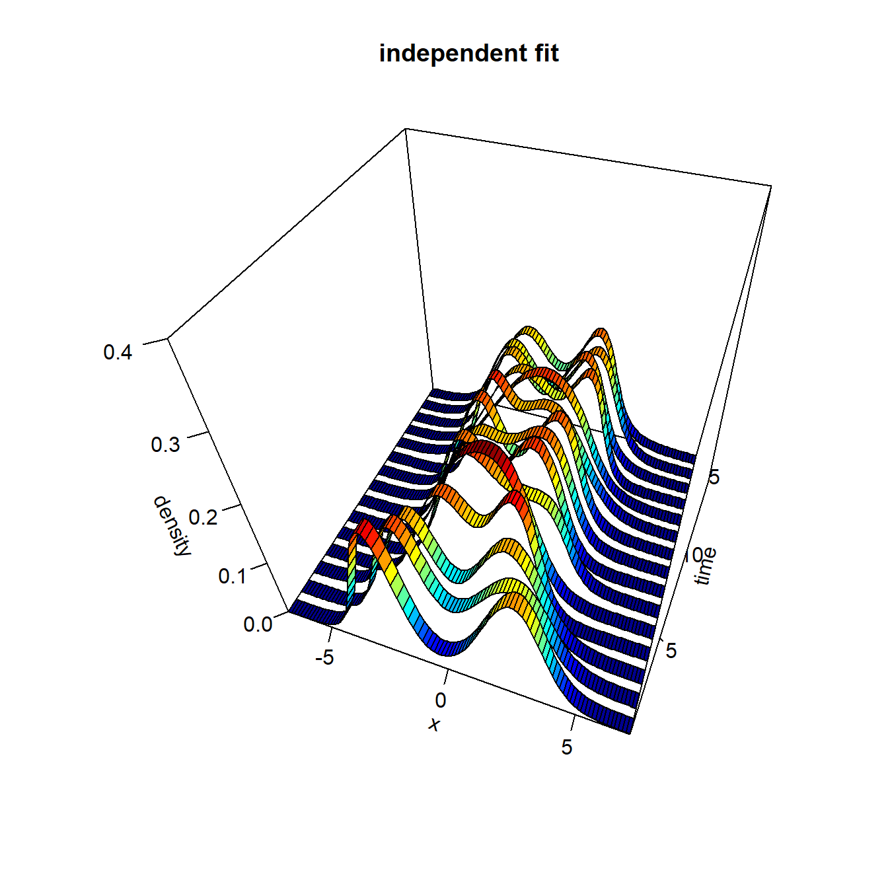
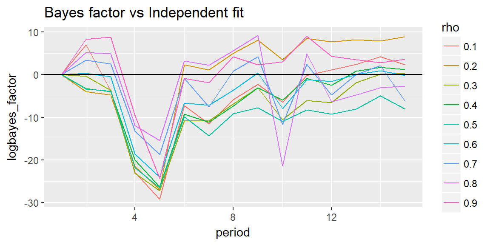

dynamic_data.RmdWe’ll see an example of time-varying mixture of normal distributions and how to select the best model.
set.seed(999)
library(plot3D)
library(pldensity)
library(mvtnorm)
library(ggplot2)time_periods <- 15
mu1_mean <- c(
seq(-3, -1.5, length.out = time_periods %/% 3),
rep(-1.5, time_periods %/% 3),
seq(-1.5, -2, length.out = time_periods %/% 3))
mu2_mean <- c(
seq(3, 1.5, length.out = time_periods %/% 3),
rep(1.5, time_periods %/% 3),
seq(1.5, 2, length.out = time_periods %/% 3))simdata <- vector("list", time_periods)
for (t in 1:time_periods) {
source1 <- rnorm(50, mu1_mean[t])
source2 <- rnorm(50, mu2_mean[t])
simdata[[t]] <- matrix(c(source1, source2)[sample(100)], ncol = 1) # aleatorise order, matrix needed
}This is the real density
resol <- 100
x <- seq(-7, 7, length.out = 100)
y <- 1:time_periods
z <- matrix(0, resol, time_periods)
for (t in 1:time_periods) {
for (i in 1:resol) {
z[i, t] <- 0.5 * dnorm(x[i], mu1_mean[t]) + 0.5 * dnorm(x[i], mu2_mean[t])
}
}persp3D(x, y, z, theta = 20, phi = 45,
border = 1, colkey = FALSE, zlim = c(0, .4),
xlab = "x", ylab = "time", zlab = "density",
ticktype = "detailed",
main = "true density")nparticles = 500
mod0 <- ddpn_init(
nparticles = nparticles,
lambda = 0,
kappa = 0.01,
nu = 3,
Omega = matrix(0.5),
alpha = 4)set.seed(110104)
mods_ind <- vector("list", time_periods)
for (t in 1:time_periods) {
mods_ind[[t]] <- ddpn_mix(mod0, simdata[[t]])
}Let’s plot the results
x <- seq(-7, 7, length.out = 100)
y <- 1:time_periods
z_ind <- matrix(0, resol, time_periods)
for (t in 1:time_periods) {
z_ind[ ,t] <- ddpn_eval(mods_ind[[t]]$updated_model, matrix(x, ncol = 1), nparticles = nparticles)
}We see that after time period one the model is not captured very well.
ribbon3D(x, y, z_ind,
theta = 20, phi = 45, border = 1, zlim = c(0, .4),
xlab = "x", ylab = "time", zlab = "density",
ticktype = "detailed", colkey = FALSE,
main = "independent fit")
We can compare the quality with the Bayes factor. We can compare different values of \(\rho\) with the independent fit model.
set.seed(110104)
nparticles = 100
logmarginal <- data.frame()
for (r in seq(0.1, 0.9, .1)) {
m_llhood <- numeric(time_periods)
mod0 <- ddpn_init(
nparticles = nparticles,
lambda = 0,
kappa = 0.01,
nu = 3,
Omega = matrix(0.5),
alpha = 4,
rho = r)
mods_cor <- vector("list", time_periods)
mods_cor[[1]] <- ddpn_mix(mod0, simdata[[1]])
m_llhood[1] <- mods_cor[[1]]$marginal_loglikelihood
for (t in 2:time_periods) {
mods_cor[[t]] <- ddpn_mix(mods_cor[[t - 1]]$updated_model, simdata[[t]])
m_llhood[t] <- mods_cor[[t]]$marginal_loglikelihood
}
logmarginal <- rbind(logmarginal, data.frame(period = 1:time_periods, rho = r, logmarginal = m_llhood))
}ind_logmarginal <- numeric(time_periods)
for (t in 1:time_periods) {
ind_logmarginal <- mods_ind[[t]]$marginal_loglikelihood
}
logmarginal$rho <- ordered(logmarginal$rho)
logmarginal$logbayes_factor <- logmarginal$logmarginal - ind_logmarginalggplot(logmarginal, aes(x = period, y = logbayes_factor, colour = rho)) +
geom_line() +
labs(title = "Bayes factor vs Independent fit") +
geom_hline(yintercept = 0)